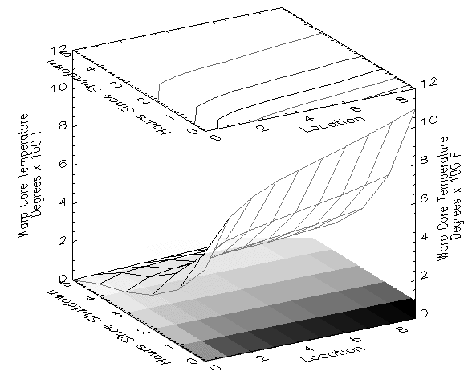

Current version: NCDF 4.1.1
The Network Common Data Format (NetCDF) is a self-describing scientific data access interface and library developed at the Unidata Program Center in Boulder, Colorado. The netCDF interface and library use XDR (eXternal Data Representation) to make the data format machine-independent.
IDL’s NetCDF routines all begin with the prefix "NCDF_".
The following IDL commands should be used to create a new netCDF file:
NCDF_CREATE: Call this procedure to begin creating a new file. The new file is put into define mode.
NCDF_DIMDEF: Create dimensions for the file.
NCDF_VARDEF: Define the variables to be used in the file.
NCDF_ATTPUT: Optionally, use attributes to describe the data.
NCDF_CONTROL, /ENDEF: Call NCDF_CONTROL and set the ENDEF keyword to leave define mode and enter data mode.
NCDF_VARPUT: Write the appropriate data to the netCDF file.
NCDF_CLOSE: Close the file.
The following commands should be used to read data from a netCDF file:
NCDF_OPEN: Open an existing netCDF file.
NCDF_INQUIRE: Call this function to find the format of the netCDF file.
NCDF_DIMINQ: Retrieve the names and sizes of dimensions in the file.
NCDF_VARINQ: Retrieve the names, types, and sizes of variables in the file.
NCDF_ATTNAME: Optionally, retrieve attribute names.
NCDF_ATTINQ: Optionally, retrieve the types and lengths of attributes.
NCDF_ATTGET: Optionally, retrieve the attributes.
NCDF_VARGET: Read the data from the variables.
NCDF_CLOSE: Close the file.
If the structure of the netCDF file is already known, the inquiry routines do not need to be called—only NCDF_OPEN, NCDF_ATTGET, NCDF_VARGET, and NCDF_CLOSE would be needed.
Two example files that demonstrate the use of the netCDF routines can be found in the
examples/doc/sdf
subdirectory of the IDL distribution. The file
ncdf_cat.pro
prints a summary of basic information about a netCDF file. The file
ncdf_rdwr.pro
creates a new netCDF file and then reads the information back from that file. Run these example procedures by entering
ncdf_cat
or
ncdf_rdwr
at the IDL command prompt or view the files in an IDL Editor window by entering
.EDIT ncdf_cat.pro
or
.EDIT ncdf_rdwr.pro
.
The following example shows how to create a netCDF file, populate it with data, read data from the file, and make a simple plot from the data.

; Create a new NetCDF file with the filename inquire.nc:
id = NCDF_CREATE('inquire.nc', /CLOBBER)
; Fill the file with default values:
NCDF_CONTROL, id, /FILL
; We’ll create some time-dependent data, so here is an
; array of hours from 0 to 5:
hours = INDGEN(5)
; Create a 5 by 10 array to hold floating-point data:
data = FLTARR(5,10)
; Generate some values.
FOR i=0,9 DO $
data(*,i) = (i+0.5) * EXP(-hours/2.) / SIN((i+1)/30.*!PI)
xid = NCDF_DIMDEF(id, 'x', 10) ; Make dimensions.
zid = NCDF_DIMDEF(id, 'z', /UNLIMITED)
; Define variables:
hid = NCDF_VARDEF(id, 'Hour', [zid], /SHORT)
vid = NCDF_VARDEF(id, 'Temperature', [xid,zid], /FLOAT)
NCDF_ATTPUT, id, vid, 'units', 'Degrees x 100 F'
NCDF_ATTPUT, id, vid, 'long_name', 'Warp Core Temperature'
NCDF_ATTPUT, id, hid, 'long_name', 'Hours Since Shutdown'
NCDF_ATTPUT, id, /GLOBAL, 'Title', 'Really important data'
; Put file in data mode:
NCDF_CONTROL, id, /ENDEF
; Input data:
NCDF_VARPUT, id, hid, hours
FOR i=0,4 DO NCDF_VARPUT, id, vid, $
; Oops! We forgot the 6th hour! This is not a problem, however,
; as you can dynamically expand a netCDF file if the unlimited
; dimension is used.
REFORM(data(i,*)), OFFSET=[0,i]
; Add the hour and data:
NCDF_VARPUT, id, hid, 6, OFFSET=[5]
; Add the temperature:
NCDF_VARPUT, id, vid, FINDGEN(10)*EXP(-6./2), OFFSET=[0,5]
; Read the data back out:
NCDF_VARGET, id, vid, output_data
NCDF_ATTGET, id, vid, 'long_name', ztitle
NCDF_ATTGET, id, hid, 'long_name', ytitle
NCDF_ATTGET, id, vid, 'units', subtitle
!P.CHARSIZE = 2.5
!X.TITLE = 'Location'
!Y.TITLE = STRING(ytitle) ; Convert from bytes to strings.
!Z.TITLE = STRING(ztitle) + '!C' + STRING(subtitle)
NCDF_CLOSE, id ; Close the NetCDF file.
SHOW3, output_data ; Display the data.
Values are converted to the appropriate type before being written to a netCDF file. For example, in the commands below, IDL converts the string "12" to a floating-point 12.0 before writing it:
varid=NCDF_VARDEF(fileid, 'VarName', [d0,d1,d2+d3], /FLOAT)
NCDF_VARPUT, fileid, 'VarName', '12'
Variables and attributes can be referred to either by name or by their ID numbers in most netCDF routines. For example, given the NCDF_VARDEF command shown below, the two NCDF_VARPUT commands shown after it are equivalent:
varid = NCDF_VARDEF(fileid, 'VarName', [d0,d1,d2+d3], /FLOAT)
; Reference by variable name:
NCDF_VARPUT, fileid, 'VarName', '12'
; Reference by variable ID:
NCDF_VARPUT, fileid, varid,'12'
Strings are stored as arrays of ASCII bytes in netCDF files. To read string data from netCDF files, use the STRING function to convert bytes back into characters. When writing an IDL string array to a variable, an extra dimension (the maximum string length) must be added to the variable definition. Both of these situations are illustrated by the following example:
; Make a test string:
string_in = REPLICATE('Test String',10,10)
; Make one element longer than the others:
string_in(0,0) = 'Long Test String'
HELP, string_in
; Create a new netCDF file:
ncdfid = NCDF_CREATE('string.nc', /CLOBBER)
; Define first dimension:
xid = NCDF_DIMDEF(ncdfid, 'height', 10)
; Define second dimension:
yid = NCDF_DIMDEF(ncdfid, 'width', 10)
; Find the length of the longest string and use that as the
; third dimension:
zid = NCDF_DIMDEF(ncdfid, 'length', MAX(STRLEN(string_in)))
; Define the variable with dimensions zid, yid, xid:
id = NCDF_VARDEF(ncdfid, 'strings', [zid,yid,xid], /CHAR)
; Put the file into data mode:
NCDF_CONTROL, ncdfid, /ENDEF
; Write the string variable. The array will be stored as bytes
; in the file:
NCDF_VARPUT, ncdfid, id, string_in
; Read the byte array back out:
NCDF_VARGET, ncdfid, id, byte_out
NCDF_CLOSE, ncdfid ; Close the file.
HELP, byte_out
; IDL reports that BYTE_OUT is a (16, 10, 10) BYTE array.
PRINT, STRING(byte_out(*,0,0))
; Taking the STRING of the first "row" of byte_out returns the
; first element of our original array, "Long Test String".
; Convert the entire byte array back into strings:
string_new = STRING(byte_out)
; The new string array has the same dimensions and values as
; our original string, string_in.
HELP, string_new
; This statement compares the two arrays and prints "Success!" if
; they are equal, and they are:
IF TOTAL(string_in NE string_new) EQ 0 THEN PRINT, 'Success!'
There are two modes associated with accessing a netCDF file: define mode and data mode. In define mode, dimensions, variables, and new attributes can be created but variable data cannot be read or written. In data mode, data can be read or written and attributes can be changed, but new dimensions, variables, and attributes cannot be created.
IDL’s NCDF_CONTROL routine can be used control the mode of a netCDF file. The only time it is not necessary to set the mode with NCDF_CONTROL is when using the NCDF_CREATE procedure to create a new file. NCDF_CREATE places the new netCDF file into define mode automatically.
The three basic components of a netCDF file are described below.
Attributes can contain auxiliary information about an entire netCDF file ( global attributes) or about a single netCDF variable. Every attribute has a name, data type, and length associated with it. It is common to repeat attribute names for each variable. For example, every variable in a netCDF file might have an attribute named "Units". Note however, that variables cannot have multiple attributes with the same names.
Dimensions are named integers that are used to specify the size (or dimensionality ) of one or more variables. Each dimension must have a unique name, but a variable and dimension can share a name. Each netCDF file is allowed to have one boundless (or unlimited ) dimension. Most often the unlimited dimension is used as a temporal variable, allowing data to be appended to an existing netCDF file. An example of this use is shown later.
Variables are multidimensional arrays of values of the same data type. Each variable has a size, type, and name associated with it. Variables can also have attributes that describe them.